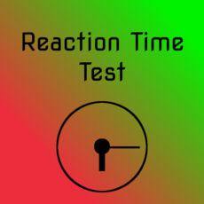
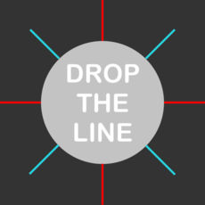
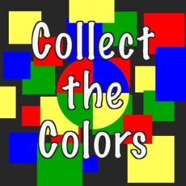

-
Simple Reaction Time Test 
This app is a very simple way to test your reaction time. When you tap play, the app changes back and forth from red and yellow screens. It then changes to a green screen with a millisecond timer, and you have to tap as fast as possible to get your best possible reaction time.
-
Drop the Line 
Tap on the screen to drop a line on a rotating circle. As your score gets higher, the circle spins faster. Every 25 lines the lines clear off the screen and you start all over, but the circle doesn't get any slower. Try to drop as many lines as possible, before you drop a line on another line. Simple, but addicting.
-
Collect the Colors 
Tilt your phone to move around a circle to collect different colored squares. The circle changes to one of four colors, so you have to collect the right color square. Try to collect as many squares as possible before losing 3 lives!